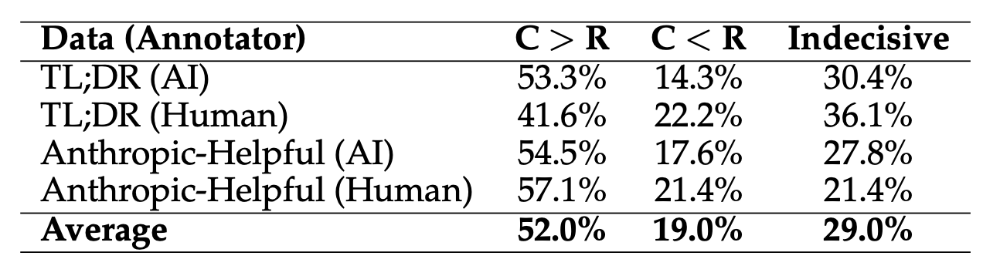

(Left) We show that the conditional preference acquisition method would require the annotators to compare two responses for an identical instruction. (Right) We show that the annotators can also assign rankings jointly over instruction-response pairs. Specifically, the annotator prefers a helpful response (e.g., Apple ... Grape) over a response that ignores the context of the instruction (e.g., wear sunscreen ... litter). Our framework thus elicits preferences that are obfuscated in the prior approach.
Abstract
Large Language Model (LLM) alignment hinges on the quality of preferences acquired from human or AI annotators. Among the various preference acquisition protocols, the ranking-based approach is the most widely used paradigm for aligning LLMs. Specifically, in this approach the annotator has to compare a pair of responses conditioned on a fixed context. However, such conditional rankings often fail to capture the complex and multidimensional aspects of human preferences.
In this work, we revisit the traditional paradigm of preference acquisition and propose a new axis that is based on eliciting preferences jointly over the instruction-response pairs. While prior preference optimizations are designed for conditional ranking protocols (e.g., DPO), our proposed preference acquisition protocol introduces DOVE, a new preference optimization objective that upweights the joint probability of the chosen instruction-response pair over the rejected instruction-response pair. Interestingly, we find that the LLM trained with joint instruction-response preference data using DOVE outperforms the LLM trained with DPO by 5.2% and 3.3% win-rate for the summarization and open-ended dialogue datasets, respectively. Our findings reveal that joint preferences over instruction and response pairs can significantly enhance the alignment of LLMs by tapping into a broader spectrum of human preference elicitation.
Interplay between Feedback Protocols
Analysis of Feedback from Humans and AI
Results for the preferences acquired jointly over the instruction-response pairs where both the responses were either chosen or rejected under the conditional rankings protocol. Here, decisive implies that the annotators were able to one of the instruction-response pairs as preferred over the other.
Results for the preferences acquired jointly over the instruction-response pairs where one of the instruction-response pair was chosen (C) and the other pair was rejected (R) under the conditional rankings. Here, C '<' R implies that the instruction-response pair that was rejected under conditional rankings is actually preferred over an instruction-response pair that was rejected under the conditional rankings.
Diverse Reasoning of Human Preferences
In this example, we find that the response B and D are rejected under the conditional rankings. When asked to compare the response B and D, humans consider that the response B answers Instruction 1 better than response D answers Instruction 2. This indicates that the joint preference humans elicits a decisive feedback between two responses that were rejected under the conditional rankings.
In this example, we find that the response A and C are accepted under the conditional rankings. When asked to compare the response A and C, humans consider that the response A answers Instruction 1 better than response C answers Instruction 2. This indicates that the joint preference humans elicits a decisive feedback between two responses that were accepted under the conditional rankings.

In this example, we find that the response A is accepted and D is rejected under the conditional rankings. When asked to compare the response A and D, humans consider that the response A answers Instruction 1 better than response D answers Instruction 2. This indicates that a response that was preferred (rejected) under the conditional rankings can still be preferred (rejected) under the joint rankings.
LLM Alignment
Results on Mistral-7B
Results for aligning LLMs with the DOVE preference optimization objective. We compare the win-rate against the gold responses of the supervised finetuned (SFT), DPO-aligned and DOVE-aligned LLM on the TL;DR summarization. In our experiments, we utilize ChatGPT to compare the model responses with the gold responses. We generate model responses for three sampling temperatures. The results are averaged over three runs of the preference optimization objectives.
Results for aligning LLMs with the DOVE preference optimization objective. We compare the win-rate against the gold responses of the supervised finetuned (SFT), DPO-aligned and DOVE-aligned LLM on the Anthropic-Helpful dataset. In our experiments, we utilize ChatGPT to compare the model responses with the gold responses. We generate model responses for three sampling temperatures. The results are averaged over three runs of the preference optimization objectives.
Win-rate against the gold response in the TL;DR and Anthropic-Helpful datasets averaged over three sampling temperatures. We study the impact of the joint preferences over non-identical instructions using DOVE.